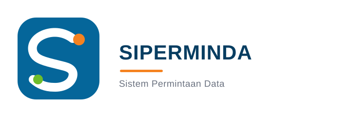
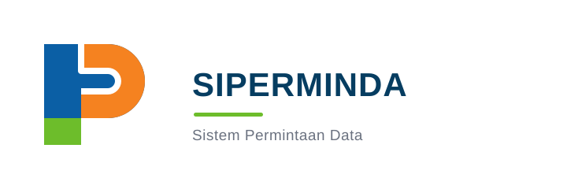
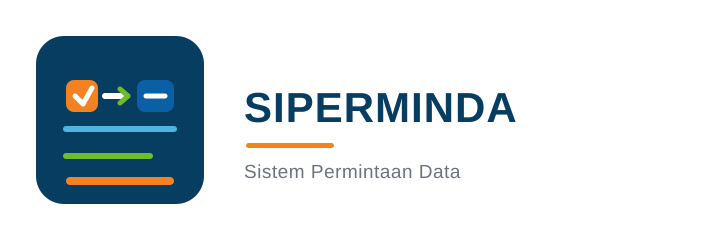
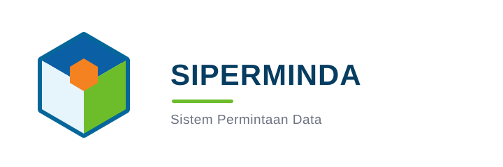

Konsep Logo SIPERMINDA
Lima arah visual untuk Sistem Informasi Permintaan Data. Semua konsep dibuat sebagai vector flat dengan latar putih.




Lima arah visual untuk Sistem Informasi Permintaan Data. Semua konsep dibuat sebagai vector flat dengan latar putih.



